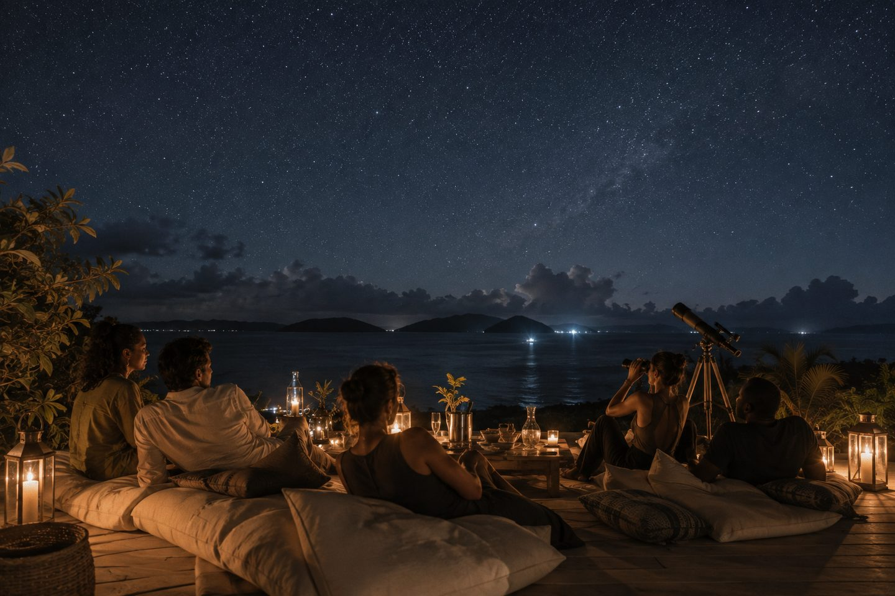
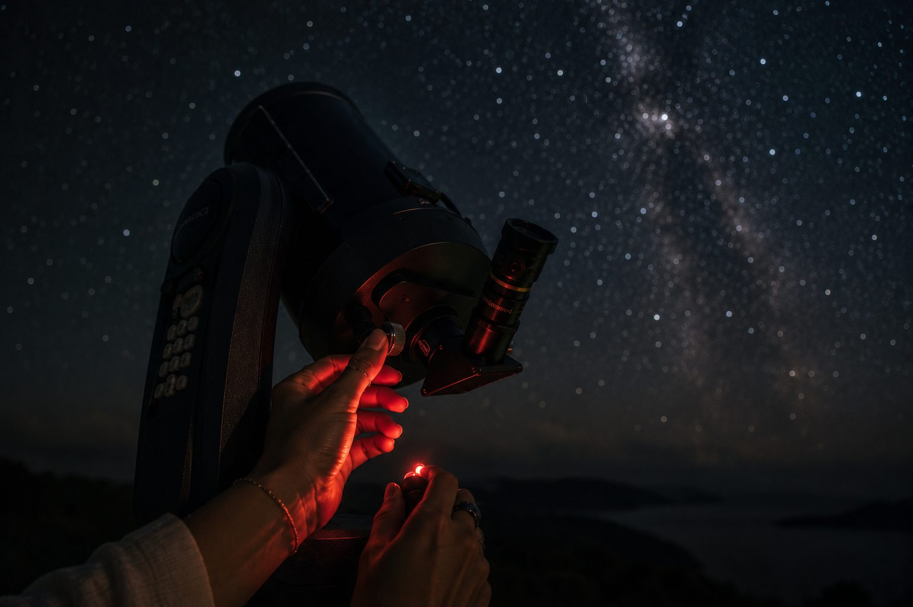
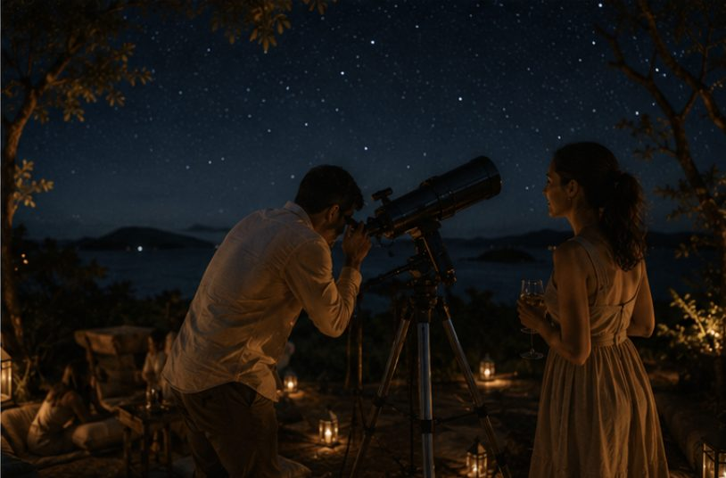

The best hours on these islands often start after dark.
Some landscapes reveal themselves best after sunset. As daylight fades, conversation slows, the air cools and the sky opens into extraordinary darkness. Away from the distractions of the everyday, time begins to feel measured differently. SALT After Dark is an invitation to experience Saint Vincent through dark skies, quiet landscapes and the simple pleasure of lingering a little longer.
The Vision
A sky the coast rarely lets you see
SALT After Dark is an evening designed around one of the islands' greatest luxuries: genuine darkness. Guests gather outdoors for thoughtful food, quiet conversation and a sky that, in much of the world, has long disappeared.
The best part of an island evening often begins after dinner, once the lanterns are the brightest light around.
The Evening
Settle. Pause. Stay.
The day's heat gives way
Guests are welcomed into a softly lit setting as the sky begins to change, the first pour arriving before full dark.

A sky with room to breathe
With the setting chosen for minimal light interference, the sky simply reveals itself, with light narration for guests who want it.

No fixed end to the evening
Food and drink continue quietly through the night, with guests free to stay as long, or as briefly, as they'd like.
For Hospitality Partners
A different kind of evening.
SALT After Dark offers guests something increasingly rare: time spent outdoors beneath genuinely dark skies, with thoughtful hospitality at its centre.
Ways to offer SALT After Dark
- 01The Quiet Evening: a small, hosted stargazing sitting with light food and drink at a villa or private setting.
- 02The Property Evening: a seasonal or occasional offering hosted at a partner hotel or resort.
- 03A Closing Chapter: SALT After Dark as the final act of a longer SALT day.
What SALT After Dark May Provide
- Concept and evening design
- Hosting and light storytelling
- Food and drink direction
- Seating, lantern and setting styling
What a Partner May Provide
- A genuinely dark outdoor setting
- Guest referral and concierge sales
- Kitchen or beverage service support
- Weather backup arrangements
Closing Vision
Some evenings deserve to linger.
We welcome conversations with hospitality and destination partners with genuinely dark settings.
Discuss a Hospitality Partnership